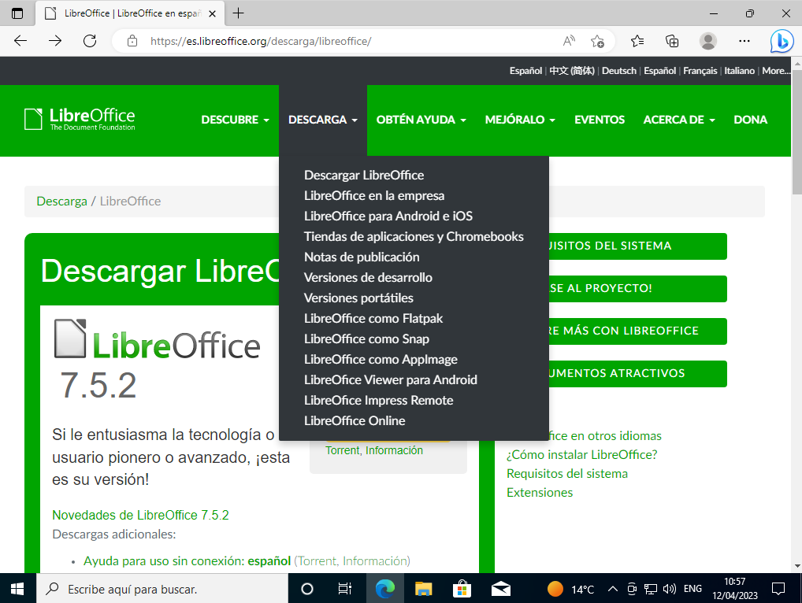
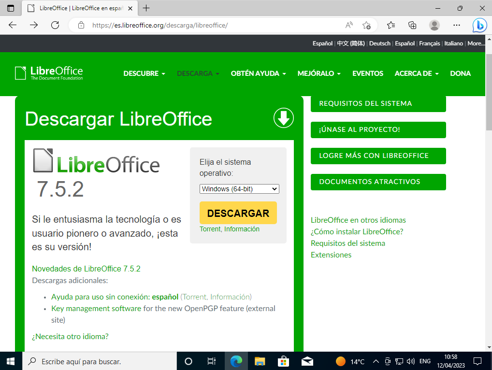
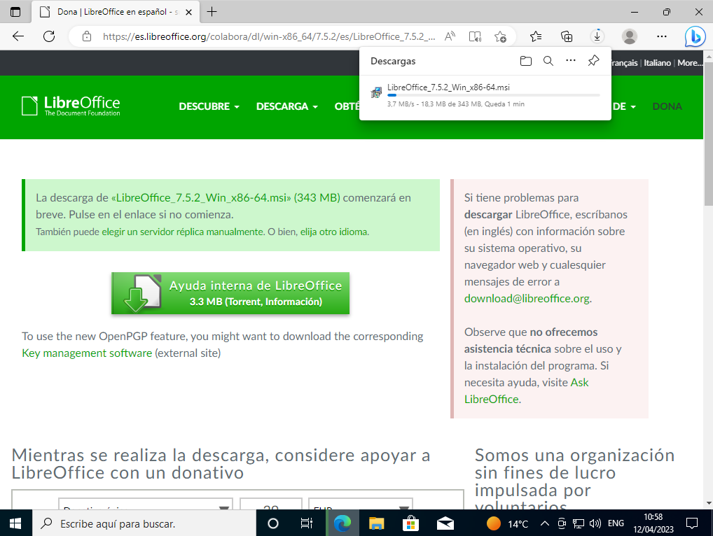
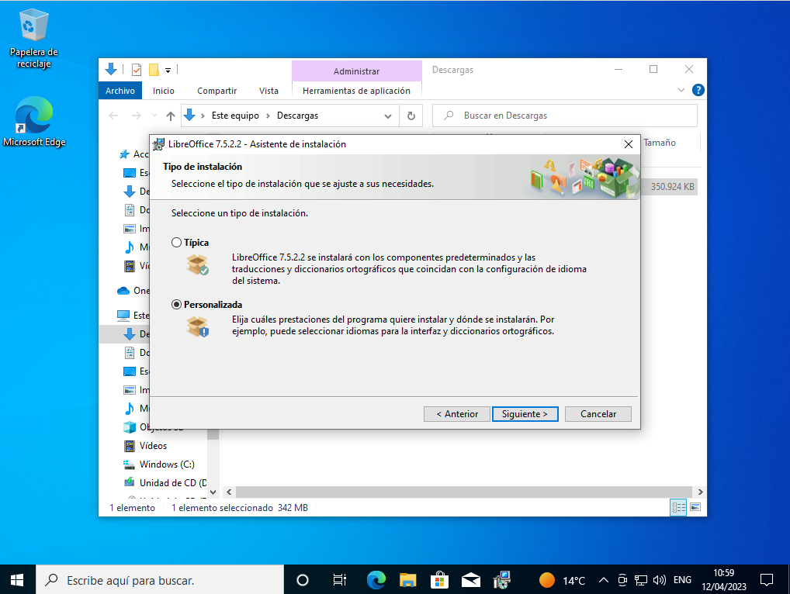
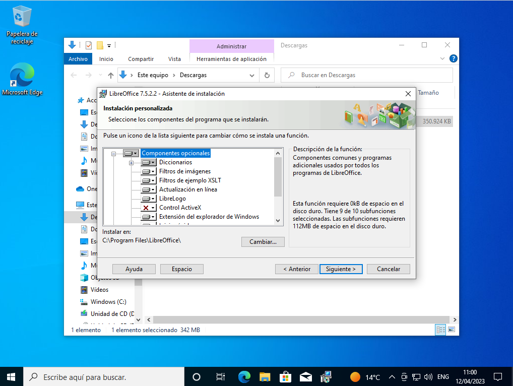
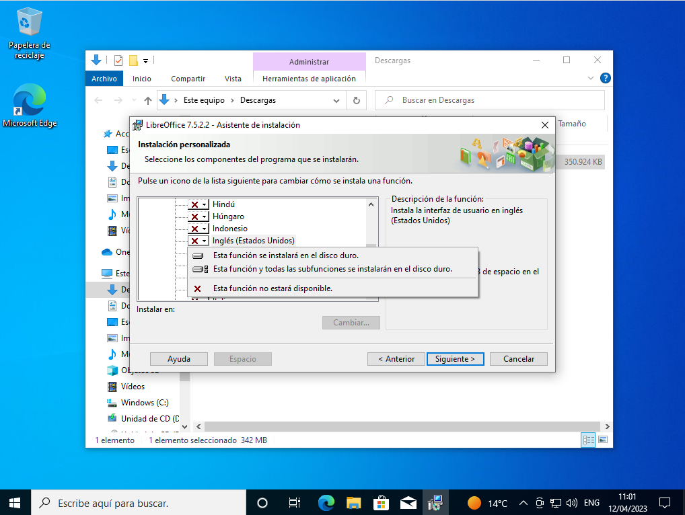
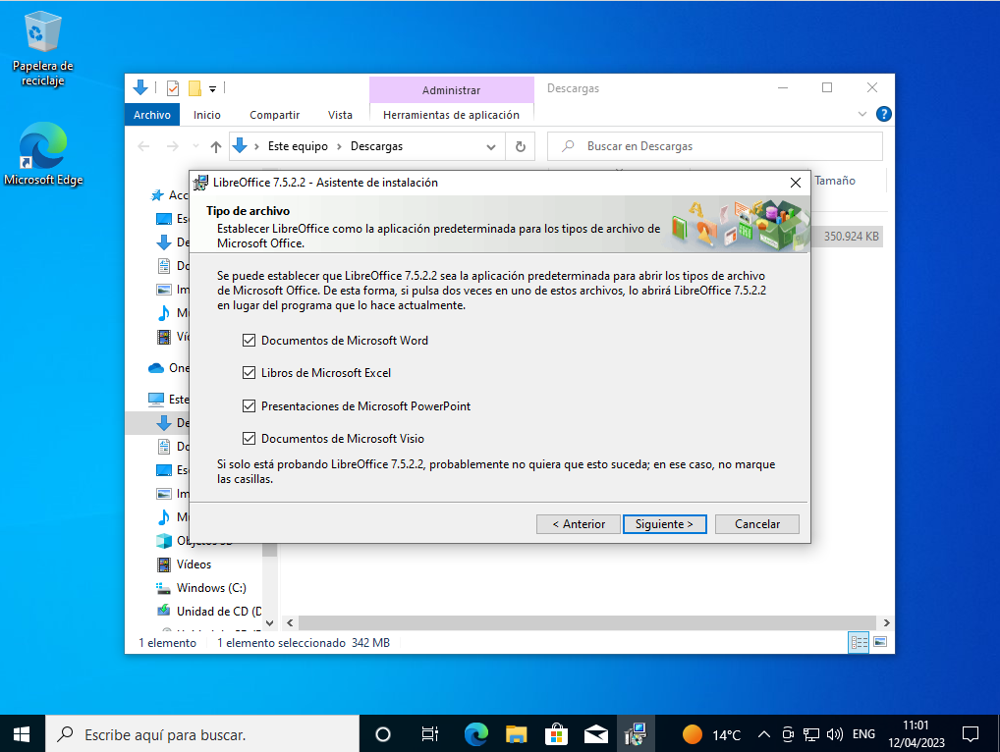
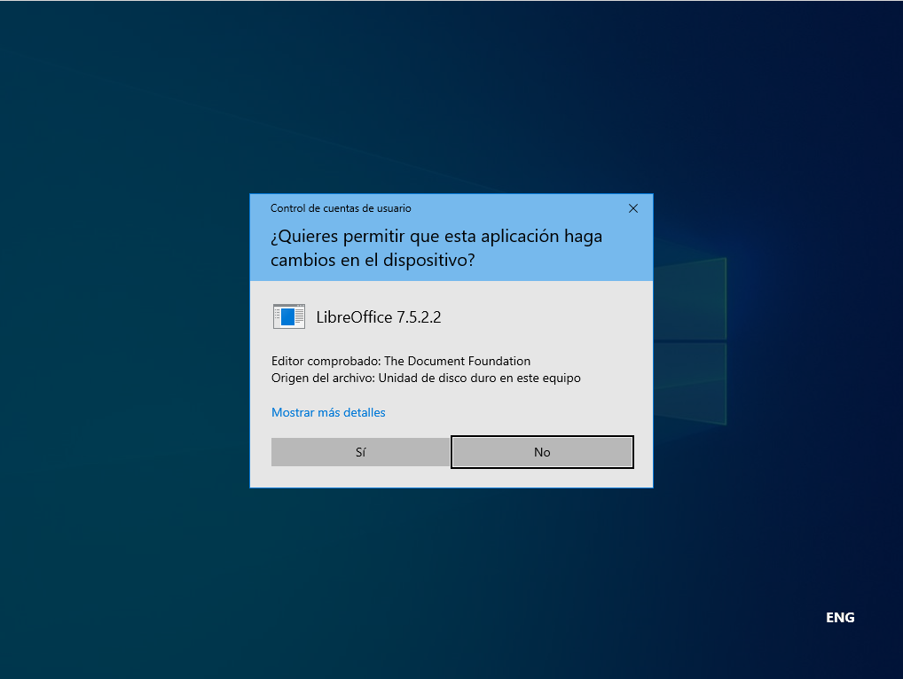
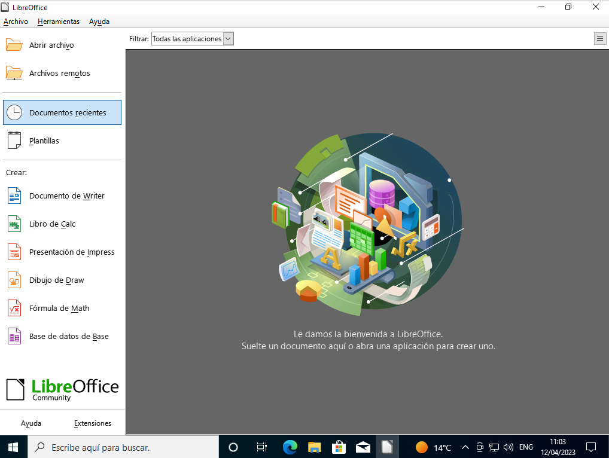

Tenemos varias opciones disponibles para instalar:
LibreOffice, Microsoft Word y OpenOffice.
Microsoft Word es una opción de pago que viene instalada por defecto en windows, aunque se puede reinstalar desde la tienda de software de windows 10.
Las otras dos opciones son distintas distribuciones del mismo programa, que se dividieron por diferencias creativas. Ambas son gratuitas, de código abierto y compatibles entre sí.
Pero antes una comparativa:
| PROGRAMA | WORD | OPEN OFFICE/LIBRE OFFICE |
|---|---|---|
| Pros |
|
|
| Contras |
|
|
Microsoft Word ya viene instalado, y en caso de desinstalarlo o no haberlo instalado durante la instalación del sistema operativo, podemos abrir la tienda de aplicaciones de Microsoft e instalarlo fácilmente allí:
Voy a hacer la guía con Libre Office porque me gusta más, y Open Office intenta "colar" aplicaciones de terceros durante su instalación
Para instalar libre office, primero tenemos que descargar el paquete ejecutable desde su página web. Para ello, vamos a la página web de Libre Office y hacemos click en descargas y seleccionamos Descargar LibreOffice
Seleccionamos nuestro sistema: Windows 64 bits en este caso y clickamos en DESCARGAR
Tras ello ejecutamos el instalador desde el historial de descargas del navegador, o bien abriendo la carpeta descargas desde el navegador de archivos y haciendo doble click en el archivo ejecutable.
Con el instalador abierto, clickamos en siguiente y elegimos personalizada para elegir qué componentes queremos instalar.
Ahora elegimos qué componentes queremos y cuales no. Para ello desplegamos los menús clickando en el +, y cambiamos el estado de instalado o no instalado clickando en el símbolo gris y y cambiando a la X para no instalarlo o al otro símbolo para sí instalarlo.
 Tras ello nos pedirá elegir qué tipos de archivos abrir. Voy a marcarlos todos.
Ahora nos pediŕa crear un acceso directo. Podemos hacerlo o no, pero recomiendo dejar la opción marcada y darle a siguiente. No recomiendo marcar la opción de iniciarlo al arranque ya que ralentizaría el inicio del ordenador.
Por último nos pedirá permisos para realizar la instalación. Le damos a sí y comenzará la instalación. Una vez termine elegimos Finalizar y terminamos.
